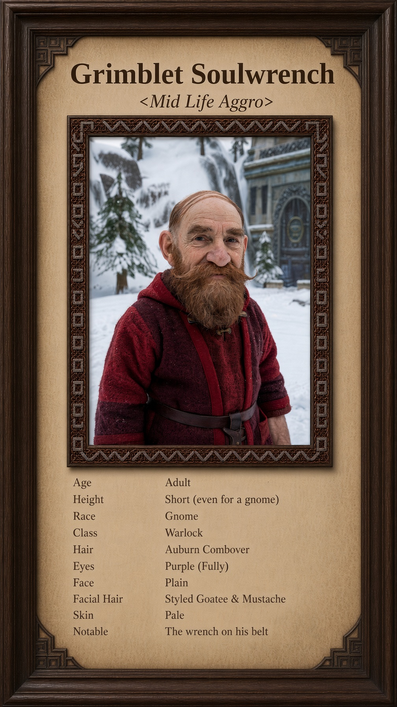

Born Zibbit Gearwhistle in the lower workshops of Gnomeregan. The purple is new. The combover is not. Does not answer to the old name.

The birth was ordinary. A neighbor held the lamp. His mother kept the small tools. His father kept the benches and the door. They named him Zibbit because it was short enough to call across a shop, and Gearwhistle because that was the name on the census.
He was a pale child from the start. Caucasian skin that did not take the soot the way the others did. A plain face the midwife marked Face 1. Straight brows. Auburn hair that was thin even then. His mother combed it hard to the side before he could walk. By the time he had a goatee it was already a combover, neat and styled, the kind other engineers called respectable. He fixed what other gnomes broke. He kept his head down. He answered to Zibbit.
The change started with a structural failure on the third level. The official report blamed unforeseen pressure differentials. It took his younger sister and half his crew. Zibbit spent weeks in the wreckage with a wrench and a lantern, pulling bodies and twisted metal. He found pieces of his sister’s goggles still latched to what was left of her face. That night he stopped sleeping. The auburn combover grew thinner. He started staying late in the empty workshops, talking to the machines as if they could answer.
A traveling warlock noticed him. Exiled, half-mad, short on souls. The warlock did not offer power at first. He offered quiet. He taught Zibbit how to listen for the small voices that lived in broken things, the ones that whispered when gears seized and when blood cooled. Zibbit told himself it was another kind of engineering. He began etching simple runes on his tools. The straight eyebrows stayed neat. The styled facial hair stayed precise. Only the eyes began to shift, a faint violet rim he blamed on the lighting.
The first pact was small. An imp, barely more than a spark, in exchange for a fragment of memory. He gave it the sound of his sister’s laugh. The imp stayed bound to a modified wrench. After that the work got easier. Machines that should have stayed broken opened for him. People who should have lived died cleaner. He stopped correcting anyone who mispronounced the old name.
By the time the higher circles noticed the purple, it was too late to pretend. He had already hollowed out a private chamber beneath the old workshops. He spent three nights carving a circle into the stone with the same wrench that held the imp. On the fourth night he stripped the last of the old name the way he had once stripped gears. He set the jaws of the wrench against his own chest, turned, and tore a thread of soul free. The demon that answered was larger than the imp. It took the thread, the old name, and the last clean memory of his sister’s face.
When he spoke afterward, the voice was new.
Grimblet Soulwrench.
The combover was crooked with sweat. The styled facial hair was slightly askew. The eyes were fully purple now. He did not fix his appearance. Precision belonged to Zibbit. Grimblet only needed the wrench, the pact, and the quiet that followed when something was finally, permanently broken.
He walked out of the lower workshops before dawn. The old name stayed behind in the circle, burned and bound. The new one went with him.
Currently: Answers to Grimblet Soulwrench. The wrench is on his belt. He does not speak the old name. The purple does not fade.
| Name | Grimblet Soulwrench |
|---|---|
| Birth Name | Zibbit Gearwhistle |
| Title | None |
| Full Title | Grimblet Soulwrench |
| Race | Gnome |
| Gender | Male |
| Class | Warlock |
| Age | Adult. Old enough to have had a crew. Young enough that the higher circles still expected him to answer. |
| Height | Short, even for a gnome. |
| Body | Pale. Ordinary until the eyes. |
| Eyes | Purple. Fully. The violet started as a rim. It finished in the circle. In-game: Eye Color 13 |
| Hair | Auburn, thin. Combover, hard to the side. In-game: Hairstyle Combover 7, Hair Color Auburn 6 |
| Facial Hair | Styled goatee and mustache. Slightly askew since the night of the pact. In-game: Facial Hair Styled 7 |
| Eyebrows | Straight. Still neat. In-game: Eyebrows Straight 2 |
| Face | Plain. The kind no one remembered twice. In-game: Face 1 |
| Skin | Caucasian. Did not take the soot. In-game: Skin Color Caucasian 1 |
| Alignment | Quiet. Precise about what he breaks. Does not correct the old name if someone still uses it. |
| Background | Lower workshops. Cave-in. Empty shops. Private chamber. Circle. |
| Home | None he will name. The lower workshops are behind him. |
Currently: Answers to Grimblet Soulwrench. The wrench is on his belt. He does not speak the old name. The purple does not fade.
Glance 1 — Old name: Zibbit Gearwhistle on the census. Burned and bound in the circle. He does not answer to it.
Glance 2 — The wrench: Modified. Runes. Jaws that bit soul. Still on the belt.
Glance 3 — Combover: Auburn, thin, hard to the side. Crooked since the night. He does not fix it.
Glance 4 — Purple: Started as a rim. Finished in the pact. Eye Color 13.
Glance 5 — Sister: Third-level cave-in. Goggles still latched. Last clean memory taken with the thread.
Grimblet Soulwrench, born Zibbit Gearwhistle, gnome warlock. Lower workshops. Pale, plain face, auburn combover, straight brows, styled facial hair. The cave-in on the third level took his sister and half his crew. He stayed late in the empty shops. A traveling warlock taught him to listen for the small voices in broken things. First pact was an imp for the sound of her laugh, bound to the wrench. He carved a circle under the workshops. On the fourth night he set the jaws against his own chest and tore a thread of soul free. The demon took the thread, the old name, and the last clean memory. When he spoke, the name was Grimblet Soulwrench. The eyes finished purple. He walked out before dawn. He does not answer to the old name. The wrench is still on his belt.